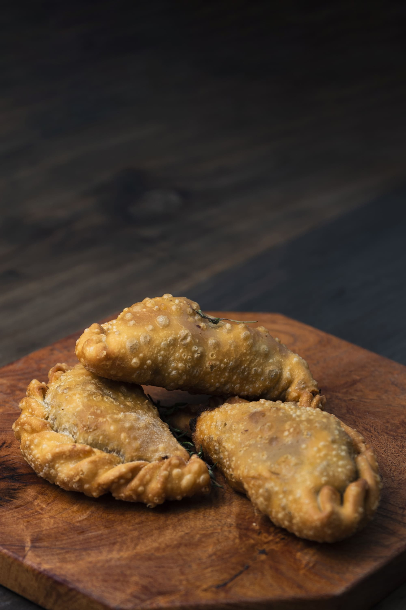

La historia de "Sabor Latino Empanadas" comenzó con una familia apasionada por la comida y sus raíces culturales. Hace décadas, nuestros fundadores, originarios de diferentes países de América Latina, se reunían para compartir sus recetas tradicionales de empanadas en reuniones familiares y celebraciones. La exquisitez de estas empanadas caseras se volvió conocida en la comunidad y la demanda creció rápidamente. Con el tiempo, lo que comenzó como una tradición familiar se convirtió en un pequeño puesto de empanadas en un mercado local. La calidad y el sabor de nuestras empanadas ganaron una base de clientes leales, y el pequeño puesto se transformó en un restaurante acogedor donde los amantes de la comida podían disfrutar de una amplia variedad de empanadas artesanales. Hoy, "Sabor Latino Empanadas" sigue siendo un lugar donde la tradición se encuentra con la innovación. Nuestras recetas familiares siguen siendo el corazón de nuestro menú, pero también exploramos nuevas combinaciones de sabores y opciones para satisfacer a todos los paladares. Estamos comprometidos en mantener viva la autenticidad de nuestras empanadas, utilizando ingredientes frescos y técnicas tradicionales. Nuestra historia es un viaje de amor por la comida, la herencia cultural y el deseo de compartir la riqueza de la gastronomía latinoamericana con el mundo. En "Sabor Latino Empanadas," cada bocado es un recordatorio de nuestras raíces y una invitación a experimentar la pasión y el sabor de América Latina.
En "Sabor Latino Empanadas," nuestra misión es llevar a nuestros clientes en un viaje culinario a través de los sabores auténticos de América Latina, a través de nuestras deliciosas empanadas. Nos esforzamos por ofrecer alimentos de la más alta calidad, elaborados con ingredientes frescos y cuidadosamente seleccionados. Queremos brindar una experiencia gastronómica única y satisfacer el paladar de nuestros clientes con empanadas que reflejen la riqueza y diversidad de la cocina latinoamericana.

Nuestra visión en "Sabor Latino Empanadas" es convertirnos en el restaurante de referencia cuando se trata de empanadas en todo el país. Deseamos ser reconocidos por nuestra calidad excepcional, autenticidad y variedad de sabores. Aspiramos a expandir nuestra presencia y compartir los tesoros culinarios de América Latina con comunidades de todo el mundo. Además, estamos comprometidos con la sostenibilidad y la responsabilidad social, buscando constantemente formas de minimizar nuestro impacto ambiental y contribuir al bienestar de nuestras comunidades.

Contactanos el Facebook, Twitter o Instagram.